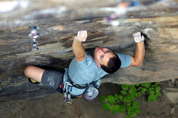

|
e-Grips Routesetting Interview: Kevin Branford 
eG: So KB, where to start… how about from the competitor’s perspective… when and where did you start competing? Your reign in the youth comp scene was pretty long as I recall…
KB: I did my first competition at the Sport Climbing Center here in Colorado Springs - The Western Regional Championships. At that point, there was not really such a thing as "Jr." competitions, so any events that I climbed in, I was competing against the adults. From there, I just tried to compete in as many events that I could. My first competition was in 1992, and I did competitions regularly until 2000. I really enjoyed climbing in comps because I was able to travel and see all of the friends that I had come to know through the years. After the Jr. Circuit started to go nuts, I won the Jr. National Championships 5 times, and the Jr. Continental Championships in 1994. I also had the good fortune to compete in the ESPN X-Games 3 times. It was just a fun way for me to bounce around and do what I loved. I am sure that is why I am a Route Setter now.
eG: Were you routesetting while a competitive climber as well, or learning the trade intuitively through climbing comp routes? Did you have any mentors as a young setter - how did you get into it?
KB: During the time that I was a competitor, I sort of catalogued everything that I was climbing on as a mini data-bank of information. My route setting overlapped the competitions that I was doing for about 4 years. In retrospect, the Route Setting that I did during the time that I was competing, was a great tool for me to be able to understand what the Setters at comps were doing and why they were doing it. I think I started to explore setting in about 1996, and it had continued through until now. The mentors that I had during that time were any of the people who were setting the comps - Tony Yaniro, Mike Pont, Steve Schneider, Christian Griffith. However, the main mentor that I had during that time and who continues to be a mentor to me in many aspects is Tony Yaniro. There is no one even close to Tony that I can think of, who has had a greater impact on my setting and climbing career. Tony has continually taught me about route setting and has mentored me (and continues to mentor me) in many aspects of climbing.
eG: So, Tony Yaniro (generation-changing climber, hold shaper, front lever hero… and, godfather of American setting) helped you learn setting as a trade and gave you some initial focused instruction. What methods did you learn years ago that you still apply in your setting? What new styles or techniques have you learned or applied?
KB: Tony has taught me and shaped me into the setter that I am. It is a bit difficult to identify exactly what Tony taught me since he has been the primary person to take me under his wing and teach me about setting for the past 12 or so years. Tony has an extensive knowledge about high level Route Setting, so anything he told me to commit to memory; I committed to memory. Any new Setters that I have worked with - Mike Moelter, Kyle Musgrove, Chris Danielson, Steven Jeffries, Kynan Waggoner, Molly Beard to name a few – I have also tried to take knowledge from them and incorporate it into my setting repertoire. The most bit of setting knowledge that I have tried to incorporate into my setting is that of Bouldering. I have never considered myself a boulderer so it has been a good learning curve for me. I do, however, still feel like I have quite a bit to learn about that particular type of setting.
eG: When it comes to competition routesetting, can you give us your take in how important forerunning is and why?
KB: Forerunning, whether you are doing it for everyday course setting in a gym, or doing it for high level competition climbing is of paramount importance. Climbing is still a relatively young sport, and giving climbers (new or not) good routes to climb on will help to give them a better understanding of climbing as a sport. In terms of competition route setting, forerunning minimizes the "error" that can happen during a competition. This question of route setting and forerunning is a bit of a loaded one because there are so many variables. On any given day, the competitors can be climbing well, or not. Forerunning and watching the climbers on previous routes gives the setter a better understanding of how to set the routes in order to test all facets of a climber’s ability. In my opinion, competitions are a way to test a climber to see how they fare against other climbers. If you don’t spend a good amount of time forerunning, it is way more difficult to pre-determine the outcome of the event.
eG: You shape holds yourself, with a few nice lines in production now - where do you draw inspiration when you put tools to foam?
KB: Thanks for the encouragement! I fear you may be a bit generous saying that. My hold shaping career is defiantly in its infancy. When I shape holds, I try and mix form with function. I like holds that look nice and also serve a purpose. Because of my competition background, most of the time that I shape, I try to think of things that I would like to use on competition routes. When I am setting comp routes, I look for holds, both hands and feet that are primarily mono-directional - meaning they can only be used in one way and one direction of pull or push. I have done about 100 shapes for various companies, and I am hoping to fine tune my shaping ability to get more of my ideas out there. Any of the companies that I have worked with have given me great feedback and constructive criticism on my shapes.
eG: What about e-Grips? As a setter - do you have any favorites? What makes eG a standout on your home wall or in the gym for comps?
KB: eG is one of the companies that is a perfect example of form mixed with function. Like I said before, I like holds that look great and also have a valid use. My primary use is usually directed at competitions, but I do spend time setting routes at X-treme Rock climbing in Miami, and the Sport Climbing Center here in Colorado Springs (and a few others) just doing day to day routes for gym use, and the purpose is still much the same… user friendly holds - e-Grips fist that profile to a "t".
eG: So… a lot of setters have probably heard rumor of what you, and a few others do professionally - that being travel around the world to change routes on cruise ship climbing walls. Where have you been? What’s it all about?
KB: Wow, word travels (because I talk a lot)! I do travel around the world on cruise ships - guilty as charged. The route setting is definitely part of what I do. My job also has a safety aspect to it. We take care of training the people who work at the walls on the ships and make sure that they have at least a basic understanding of the climbing world and what it is all about. I do have a job that only a handful of people do, and we get to go to some great places. I don’t usually get a huge amount of time to sniff around the places that I go, but over the past 6 years or so, I have come to know a bunch of great places, and I have favorite restaurants in most of the places that I go. I have to say that probably one of my favorite things about the job (other than the travel) is that I have met some incredible people. I feel confident in saying that I could go most anywhere and have a friend to show me around. I truly enjoy showing people about climbing, and my job is one of the best ways that I can think of to do so.
eG: You have been involved in a couple of Tony Yaniro’s setting clinics and are now part of the USA Climbing Routesetting Committee, which has developed further clinics and internship programs, making an effort to open up opportunities for instructional and certification opportunities. Any words on the value there is in top setters instructing clinics?
KB: Setting is a science. I have worked more than half my life (almost 17 years) to understand climbing. I think it is wonderful that it has really started to gain some steam in the mainstream. When I started climbing, there were only 5 climbing gyms in the country, and so I have really seen it come around - ups and downs (pun intended). The main value that I see in the top setters teaching route setting to aspiring climbers and route setters is simple - to make climbing a viable sport in the eyes of everyone out there, the professionals in our line of work need to pass the information on. A greater understanding of what we as setters do will help bring the level of the sport to a place where it is not just some esoteric sport that no one knows about. We (route setters) set the standards of sport climbing to a higher level. As a group, we are moving our sport forward.
eG: What are the most valuable things for a new setter to learn? If someone doesn’t have a mentor, how might they pick up the skills and improve?
KB: The best advice I can give for new setters is to gain experience from many different setters. I have literally worked with more than two dozen route setters in the past 19 years, and I have gained knowledge from all of them. After that long I still learn things from everyone that I work with, even some of the people I teach. The other piece of advice that I can recommend is not to think you are too good to learn. Everyone has something to offer no matter how small it may be. Route setting is still not quite at a place where someone can make a huge amount of money, but it is a truly rewarding job regardless of the $. Enroll in clinics, set at your local gym, and don’t be afraid to take criticism (at least constructive criticism). We are all working at this to make our sport better.
eG: Lastly, what’s on the horizon for you in 2008? Setting, climbing, traveling?
KB: Well, this next year brings good omen. I just got done with setting at the SCS Adult Nationals in Salt Lake City, and I will be at the SCS Jr. Nationals this summer. I am planning on spending any bit of free time outside climbing this summer, and I am planning on working on several new sets of holds that hopefully will come out later this year. As far as traveling, I am sure it will be as crazy as ever. Last year I logged about 130,000 frequent flyer miles (on about 120 flights), so I am out to beat that number, hopefully by a long shot (I am a nerd I know - Want to see my spreadsheet with all my miles?) I am moving in the direction that I was destined for - even if I am not sure which direction it is.
eG: Thanks Kevin!
|